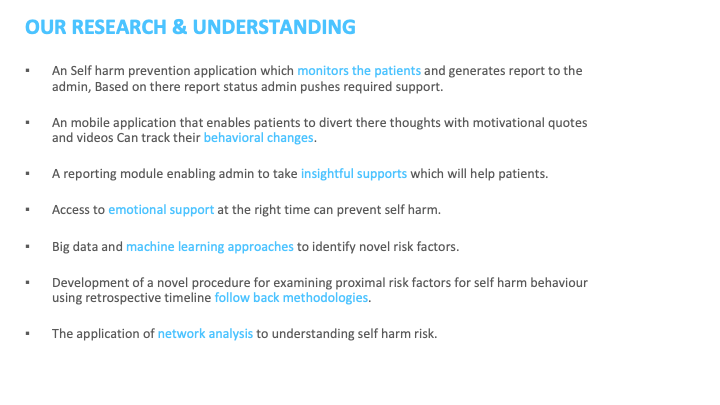
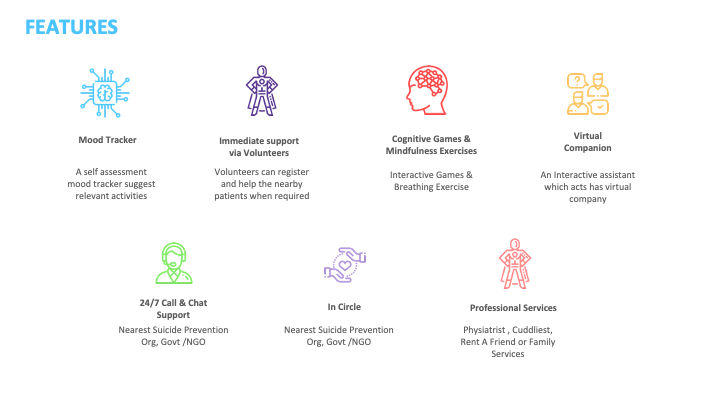
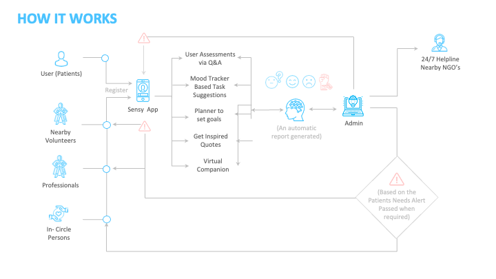
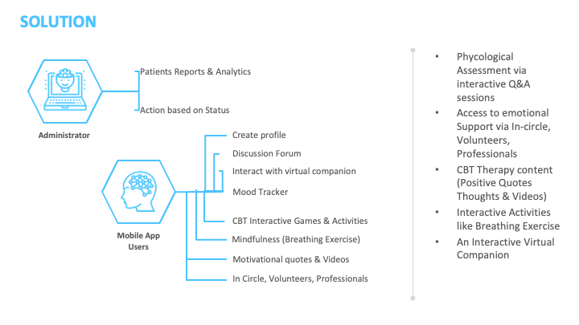
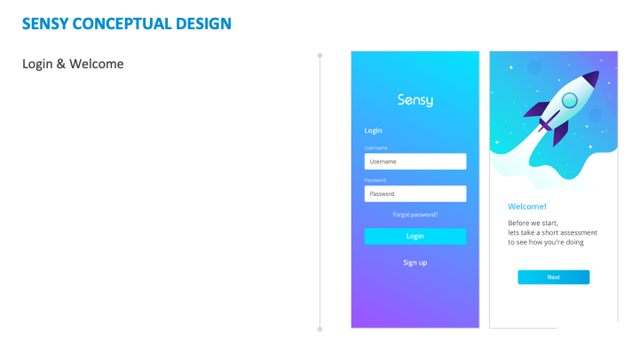
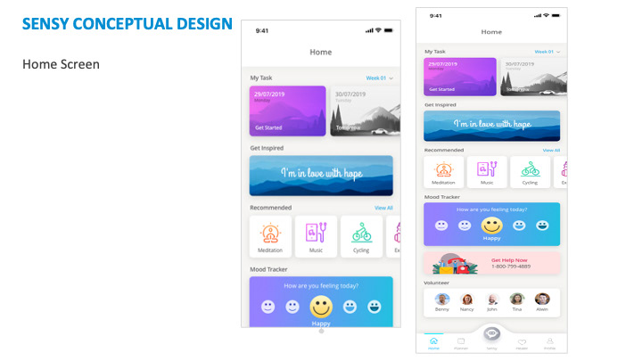
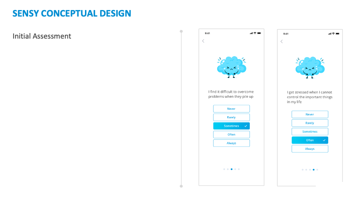
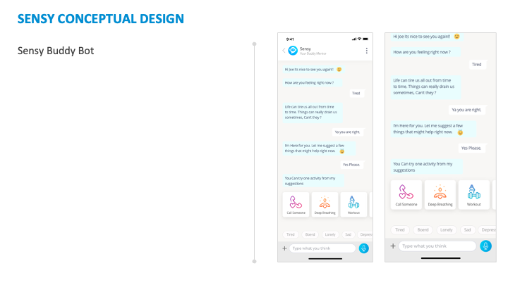

Designing Sensy
A self-directed conceptual proposal for a self-harm prevention companion app — grounded in WHO suicide-prevention guidance, never built or user-tested, and presented here exactly as that: a concept, not a shipped product.
Project Context

This wasn't a client brief — it was a self-initiated proposal exploring whether a mobile app could meaningfully support people at risk of self-harm, built around published suicide-prevention guidance rather than assumption. Sketch was the tool; the deliverable was a conceptual design proposal, not production software.
Type
Self-directed conceptual proposal — not a paid engagement, not a shipped product.
Domain
Mental health / self-harm prevention — a domain where getting the interaction model wrong has real stakes.
My role
End-to-end: research grounding, feature definition, system flow, and conceptual UI.
Tool
Sketch. Published November 2021.
This proposal was never built, shipped, or tested with real users. There is no usability data, no clinical validation, and no outcome metrics — anything that would need those is deliberately left out rather than invented. What follows is the research grounding, the designed feature set, and the conceptual screens exactly as proposed.
Starting from public-health guidance, not a feature list
What the app needed to be true to
Before any screen was drawn, the brief for Sensy was framed as a set of things the app had to be true to — grounded in how self-harm prevention actually works, not how a typical wellness app is built.
- A self-harm prevention application which monitors patients and generates a report to the admin — the admin pushes required support based on that report status.
- A mobile app that lets patients divert their thoughts with motivational quotes and videos, and tracks behavioural change over time.
- A reporting module giving the admin insightful support options to help patients.
- Access to emotional support at the right time as a preventive measure, not an after-the-fact response.
- Big data and machine-learning approaches to identify novel risk factors.
- A procedure for examining proximal risk factors for self-harm behaviour using retrospective timeline follow-back methodologies.
- The application of network analysis to understanding self-harm risk.

WHO's key points on suicide prevention
Rather than treating this as a purely product-design problem, the proposal anchored itself to the World Health Organization's own framing of what creates social change around suicide prevention — three factors that shaped what Sensy could realistically claim to contribute.
Sensy was scoped as a contribution to the first factor — practice-informed knowledge and individual-level support — not a substitute for the public-health and policy work the other two factors require.
Seven features, each tied to a specific support need
Every feature maps back to one of the research points above — self-assessment, diversion, human support, or escalation — rather than being a generic wellness-app checklist.
Mood Tracker
A self-assessment mood tracker that suggests relevant activities based on how the patient is feeling.
Immediate Support via Volunteers
Volunteers can register and help nearby patients when required.
Cognitive Games & Mindfulness
Interactive games and breathing exercises for in-the-moment coping.
Virtual Companion
An interactive assistant that acts as virtual company for the patient.
24/7 Call & Chat Support
Direct routing to the nearest suicide-prevention org, government body, or NGO.
In Circle
A trusted personal network, alongside the nearest suicide-prevention org/NGO.
Professional Services
Access to physiatrist, cuddlist, rent-a-friend, or family services.

Four groups feeding one loop, with a real escalation path
The system connects four kinds of people — patients, nearby volunteers, professionals, and a patient's own trusted "in-circle" — through the Sensy app, with the admin sitting between the app's automatic reporting and a real escalation path to a 24/7 helpline and nearby NGOs when a patient's needs indicate it.
- Patients register and use the app for assessments (via Q&A), mood-tracker-based task suggestions, a goal-setting planner, inspired quotes, and the virtual companion.
- Nearby volunteers, professionals, and in-circle persons are all connected into the same loop, available to respond when needed.
- The admin receives an automatically generated report from the patient's activity and can take action based on status.
- Escalation — based on the patient's needs, an alert is passed to a 24/7 helpline and nearby NGOs when required.

Two roles, split by what each one actually needs
The solution splits cleanly into what an administrator needs to do their job, and what a mobile app user (the patient) needs to feel supported day-to-day.
Administrator
Patient reports & analytics, and the ability to take action based on a patient's status.
Mobile App User
Create profile, discussion forum, interact with virtual companion, mood tracker, CBT interactive games & activities, mindfulness (breathing exercise), motivational quotes & videos, and access to in-circle, volunteers, and professionals.
The therapeutic content itself was scoped around CBT (Cognitive Behavioural Therapy) principles — interactive activities and positive-framing content, rather than open-ended journaling or unmoderated peer chat.

Four screens, carrying the whole proposal into UI
The conceptual screens exist to show the feature set as a real interaction, not to serve as a finished, tested UI kit.
Login & Welcome

Home Screen

Initial Assessment

Sensy Buddy Bot

What this proposal doesn't answer
Being honest about the boundaries of a conceptual proposal matters more here than almost anywhere else in this portfolio. Sensy was never validated with clinicians, never tested with people with lived experience of self-harm, and never reviewed for the safety and escalation risks that a real product in this space would need to clear before shipping. Any real version of this would need clinical partners, a safety review, and testing protocols designed specifically for a vulnerable user group — none of which happened here.